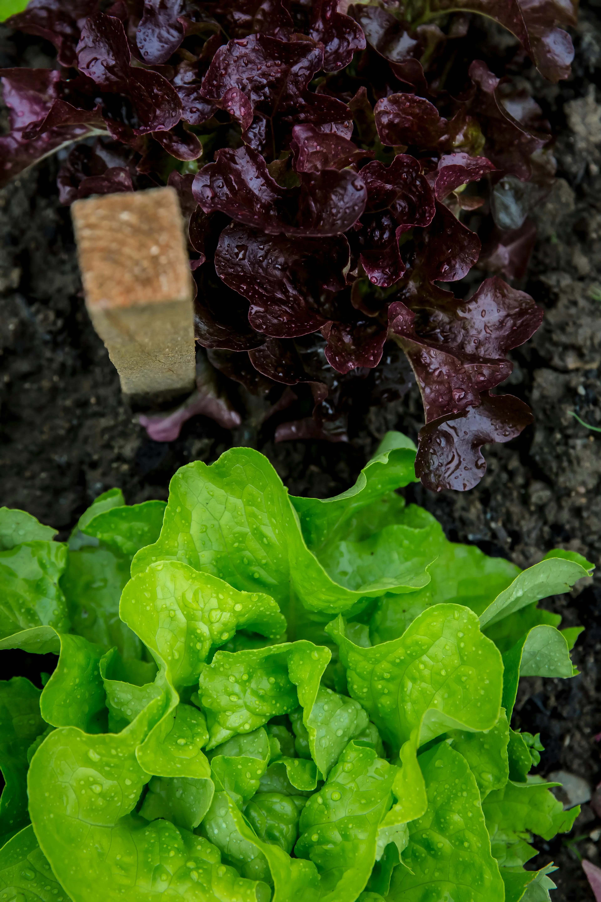
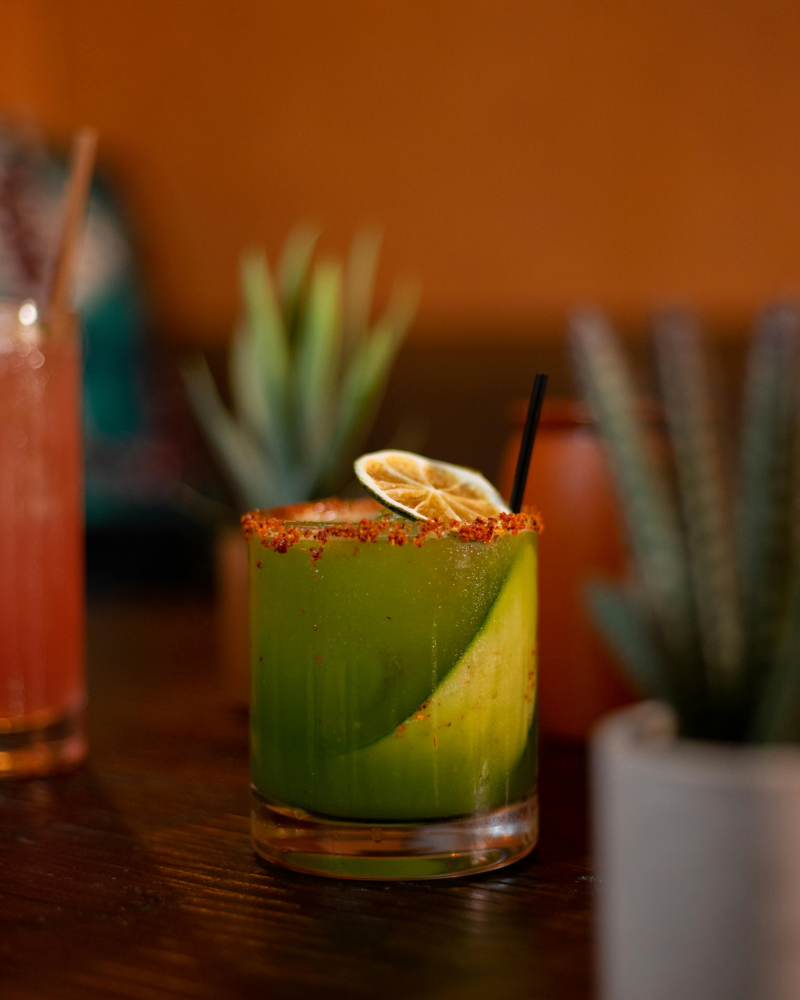
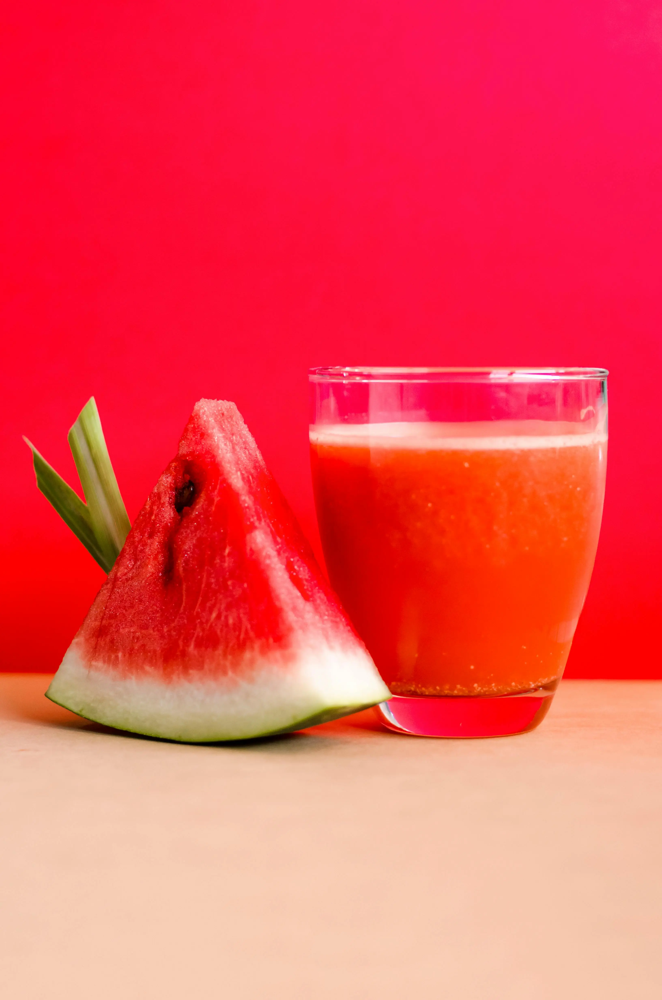
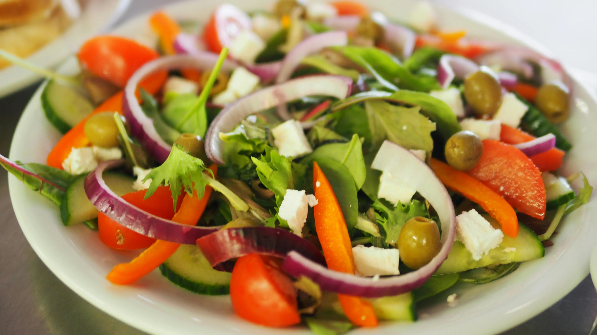
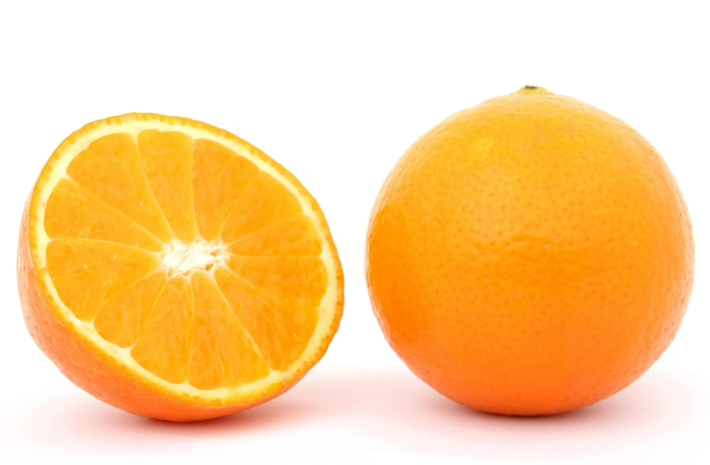
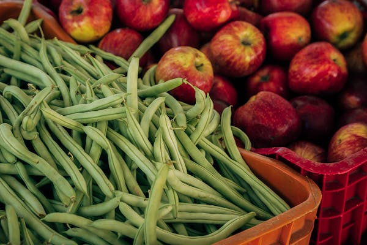
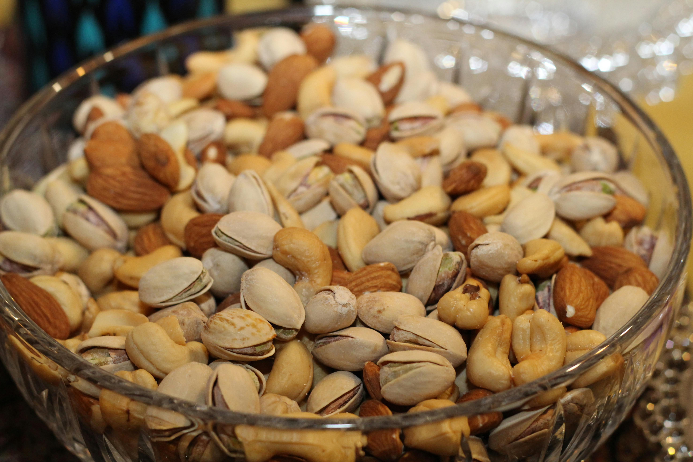
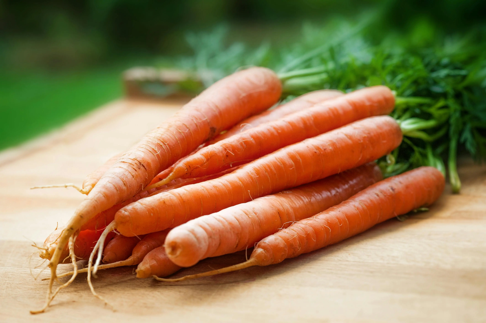
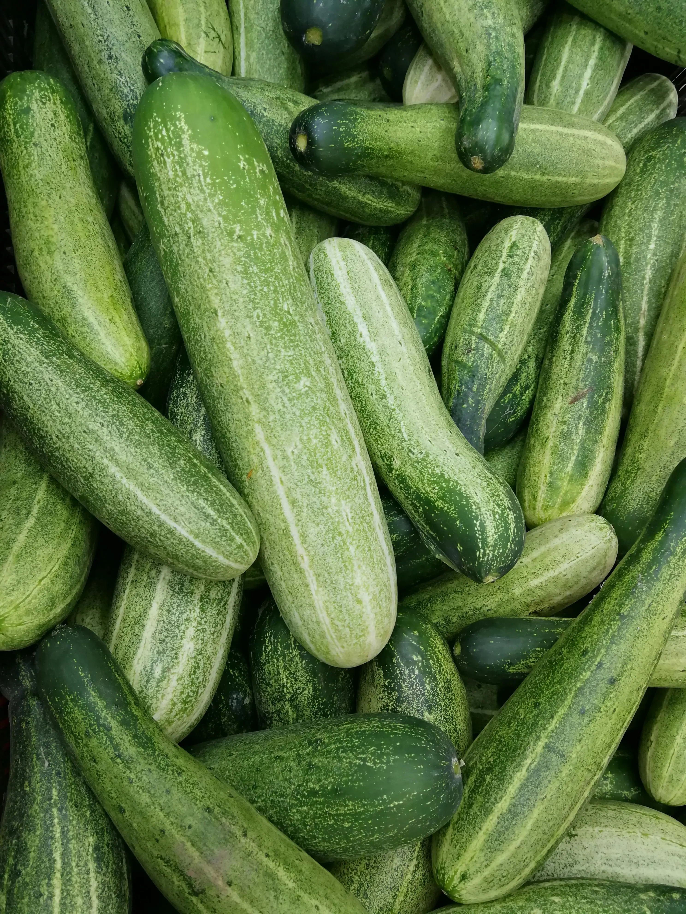
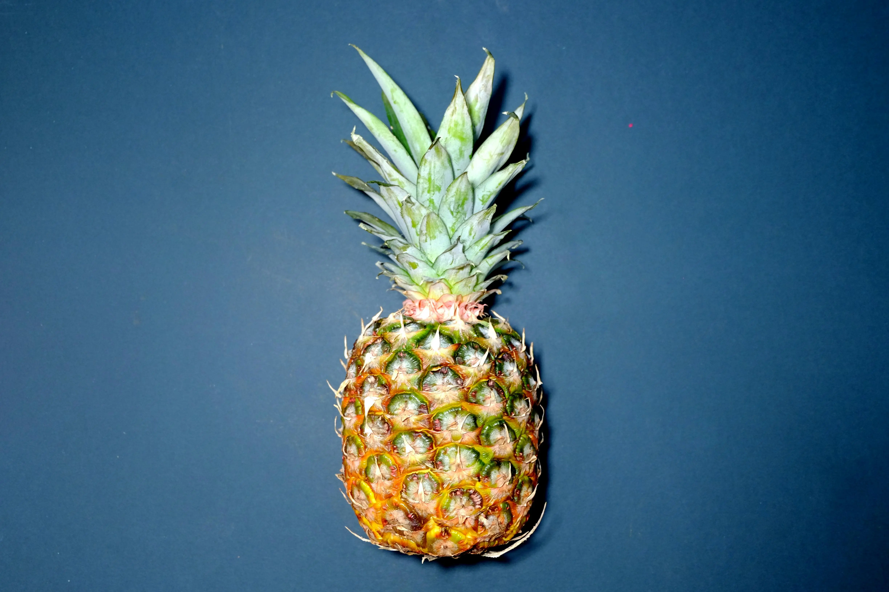

Diabetes
Avoid refined sugars and high-glycemic foods; choose whole
grains and monitor portion sizes.
Hypothyroidism
Avoid excessive intake of cruciferous vegetables like
broccoli, cabbage, cauliflower, and Brussels sprouts.


Hypertension
Reduce sodium intake by avoiding processed and salty foods;
limit alcohol and caffeine.
Celiac Disease
Strictly avoid gluten-containing foods like wheat, barley, and
rye.

Kidney Disease
Limit phosphorus and potassium-rich foods; control sodium
intake.
GERD (Gastroesophageal Reflux Disease)
Avoid acidic and spicy foods; limit caffeine, chocolate, and
fatty foods.


Osteoporosis
Limit caffeine and alcohol; ensure adequate intake of calcium
and vitamin D.
Gout
Limit purine-rich foods such as organ meats, shellfish, and
certain fish.


Heart Disease
Reduce saturated and trans fats; increase omega-3 fatty
acids; focus on fruits, vegetables, whole grains, and lean
proteins.
Inflammatory Bowel Disease (IBD)
Identify trigger foods; focus on easily digestible,
low-residue foods during flare-ups.

Gallstones
Limit dietary cholesterol; include fiber-rich foods; maintain
a healthy weight.
Irritable Bowel Syndrome (IBS)
Identify and avoid trigger foods; consider a low-FODMAP diet
under professional guidance.


Chronic Kidney Disease (CKD)
Adjust protein intake based on disease stage; monitor
phosphorus and potassium levels.
Multiple Sclerosis (MS)
Consider an anti-inflammatory diet; ensure adequate vitamin D
intake.


GERD (Gastrointestinal Reflux Disease)
Avoid acidic foods and beverages; opt for smaller meals and
avoid lying down immediately after eating.
Hyperthyroidism
Limit iodine-rich foods such as seaweed and iodized salt.


Rheumatoid Arthritis
Limit processed foods and foods high in saturated fats;
consider an anti-inflammatory diet.
Epilepsy
Identify and avoid potential trigger foods; consider a
ketogenic diet under medical supervision.


Migraines
Limit potential trigger foods such as chocolate, caffeine, and
certain aged cheeses.
PCOS (Polycystic Ovary Syndrome)
Manage insulin resistance by avoiding refined sugars and
processed foods.


Endometriosis
Reduce inflammatory foods; limit red meat and high-fat dairy.
Fibromyalgia
Avoid artificial sweeteners and processed foods; consider an
anti-inflammatory diet.


COPD (Chronic Obstructive Pulmonary Disease)
Limit sodium intake to manage fluid retention.
G6PD Deficiency
Avoid foods high in fava beans and certain legumes.

Crohn's Disease
Identify trigger foods; consider a low-residue or specific
carbohydrate diet.
Ulcerative Colitis
Limit high-fiber foods during flare-ups; avoid trigger foods.

Diverticulitis
Avoid nuts, seeds, and popcorn during acute episodes.
Gallbladder Disease
Limit high-fat and fried foods; avoid rapid weight loss.


Eczema
Identify and avoid potential trigger foods such as dairy and
gluten.
Psoriasis
Reduce intake of red meat, processed foods, and alcohol.
Hemochromatosis
Limit iron-rich foods and vitamin C-rich foods.
Wilson's Disease
Avoid copper-rich foods such as liver and shellfish.


Mastocytosis
Identify and avoid trigger foods that may cause allergic
reactions.
Lactose Intolerance
Limit or avoid dairy products containing lactose.
Fructose Malabsorption
Reduce intake of high-fructose fruits and sweeteners.
Histamine Intolerance
Limit histamine-rich foods such as aged cheeses and fermented
foods.
Porphyria
Avoid trigger foods that may exacerbate symptoms.
Hemorrhoids
Limit spicy foods and those that may cause constipation.


Peripheral Artery Disease (PAD)
Reduce saturated fats and sodium; manage cholesterol levels.
Osteoarthritis
Maintain a healthy weight to reduce stress on joints.


Hypoglycemia
Avoid excessive intake of refined sugars; opt for balanced
meals and snacks.
Ankylosing Spondylitis
Consider an anti-inflammatory diet; limit processed foods.

Gastritis
Avoid spicy, acidic, and fried foods; limit caffeine and
alcohol.
Pancreatitis
Limit high-fat and fried foods; avoid alcohol.

Trigeminal Neuralgia
Identify and avoid trigger foods such as certain spices.
Myasthenia Gravis
Ensure a balanced diet; consider smaller, more frequent
meals.

Sarcoidosis
Limit calcium-rich foods if hypercalcemia is present.
Ménière's Disease
Reduce salt intake; avoid caffeine and alcohol.

Huntington's Disease
Maintain a balanced diet; consider softer textures for
swallowing difficulties.
Amyotrophic Lateral Sclerosis (ALS)
Optimize nutrition and consider soft-textured foods as
needed.

Crohn's Disease
Focus on low-fiber foods during flare-ups; consider a
low-residue diet; avoid trigger foods such as dairy or
high-fat foods.
Ulcerative Colitis
Eat small, frequent meals; avoid spicy foods, caffeine, and
alcohol; incorporate probiotics and soluble fiber.

Diverticulitis
Initially, follow a clear liquid diet; gradually introduce
low-fiber foods; avoid nuts, seeds, and popcorn.
Anemia
Consume iron-rich foods such as lean meats, fortified
cereals, beans, and leafy green vegetables; pair with vitamin
C-rich foods to enhance iron absorption.

Celiac Disease
Strictly avoid gluten-containing grains such as wheat,
barley, and rye; opt for gluten-free alternatives such as
rice, quinoa, and gluten-free oats
Polycystic Ovary Syndrome (PCOS)
Choose complex carbohydrates over refined sugars; focus on
lean proteins and high-fiber foods; balance macronutrients to
manage insulin resistance.

Osteoarthritis
Maintain a healthy weight to reduce stress on joints; include
anti-inflammatory foods such as fatty fish, nuts, and colorful
fruits and vegetables.
Rheumatoid Arthritis
Incorporate omega-3 fatty acids from sources like fish,
flaxseeds, and walnuts; limit processed and fried foods;
consider an anti-inflammatory diet.

Depression
Include mood-boosting foods such as fatty fish, whole grains,
leafy greens, and berries; limit processed foods and sugary
snacks.
Anxiety
Consume foods rich in magnesium and zinc, such as nuts, seeds,
legumes, and whole grains; limit caffeine and alcohol intake;
consider herbal teas like chamomile or valerian root.